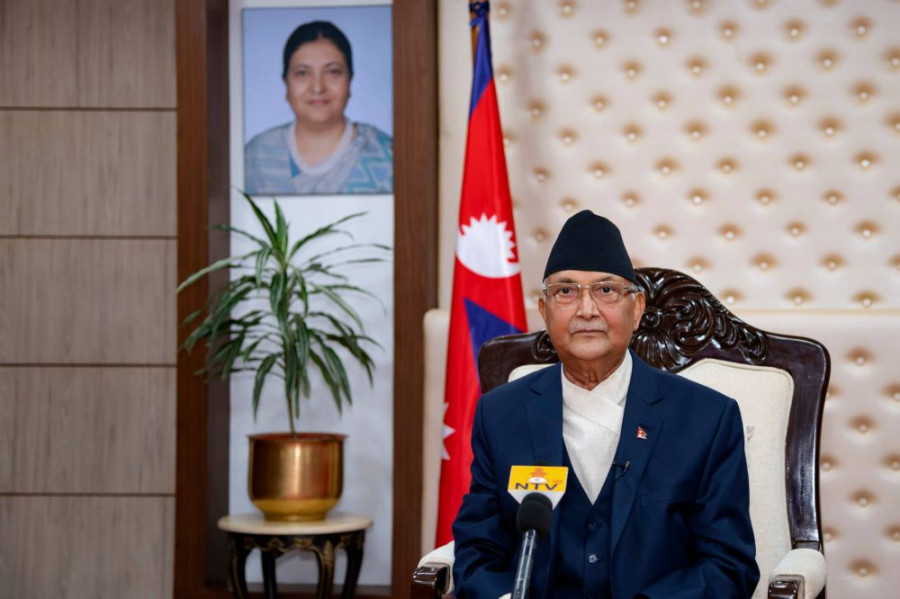

Oli’s claims House can’t be restored objectionable, analysts say
Ever since Prime Minister KP Sharma Oli dissolved the House of Representatives, in a move that led to a split in the Nepal Communist Party, he has resorted to two things–vituperative words for his opponents and constant refrain that the House cannot be restored. While bitter remarks for his former fellow comrades Pushpa Kamal Dahal andMadhav Kumar Nepal among others can be taken as his outburst against them in the wake of the party split, many have wondered why Oli has been constantly–and confidently–saying the House cannot be restored, even as the Supreme Court is testing the constitutionality of his move. stitutional Bench is resuming the hearing on as many as 13 petitions against Oli’s December 20 move of dissolving the House on Wednesday. In response to a show cause notice issued by the court on December 25, Oli on Sunday furnished his explanation, arguing that the House dissolution was a political move and that it does not warrant a judicial review. On December 30, Oli said the possibility of the House reinstatement is not even 1 percent. On Saturday, addressing a function, Oli reiterated the same. Observers say Oli, who has been reduced to a caretaker prime minister since he dissolved the House, is making a mockery of the country’s judicial system by constantly speaking on a matter that is already with the court of law. According to them, since the court is set to resume the hearing and has even called for an amicus curiae, no statements should be made that could influence the decision.
“It is advisable that a responsible person like the prime minister, who is exercising executive powers, respect the court and rule of law and not repeatedly talk about a matter which is sub-judice,” said Balaram KC, a former Supreme Court Justice. “One round of hearing has been concluded and the next hearing has already been scheduled. If the prime minister believes in rule of law and constitutionalism, he should refrain from making such statements.”Since the day Oli dissolved the House, experts on constitutional affairs have called his move unconstitutional. They have argued that the 2015 constitution does not allow a majority prime minister to dissolve the House. Some have described Oli’s action as a blatant attack on the constitution and democracy.
Oli’s claims House can’t be restored objectionable, analysts say Since dissolving Parliament, Oli has in almost all his public appearances said it cannot be revived, even though the Supreme Court is hearing the matter. Oli’s claims House can’t be restored objectionable, analysts say Photo via Prime Minister's secretariat. Ever since Prime Minister KP Sharma Oli dissolved the House of Representatives, in a move that led to a split in the Nepal Communist Party, he has resorted to two things–vituperative words for his opponents and constant refrain that the House cannot be restored. While bitter remarks for his former fellow comrades Pushpa Kamal Dahal and Madhav Kumar Nepal among others can be taken as his outburst against them in the wake of the party split, many have wondered why Oli has been constantly–and confidently–saying the House cannot be restored, even as the Supreme Court is testing the constitutionality of his move. The Constitutional Bench is resuming the hearing on as many as 13 petitions against Oli’s December 20 move of dissolving the House on Wednesday. In response to a show cause notice issued by the court on December 25, Oli on Sunday furnished his explanation, arguing that the House dissolution was a political move and that it does not warrant a judicial review. On December 30, Oli said the possibility of the House reinstatement is not even 1 percent. On Saturday, addressing a function, Oli reiterated the same. Observers say Oli, who has been reduced to a caretaker prime minister since he dissolved the House, is making a mockery of the country’s judicial system by constantly speaking on a matter that is already with the court of law. According to them, since the court is set to resume the hearing and has even called for an amicus curiae, no statements should be made that could influence the decision.
“It is advisable that a responsible person like the prime minister, who is exercising executive powers, respect the court and rule of law and not repeatedly talk about a matter which is sub-judice,” said Balaram KC, a former Supreme Court Justice. “One round of hearing has been concluded and the next hearing has already been scheduled. If the prime minister believes in rule of law and constitutionalism, he should refrain from making such statements.” Since the day Oli dissolved the House, experts on constitutional affairs have called his move unconstitutional. They have argued that the 2015 constitution does not allow a majority prime minister to dissolve the House. Some have described Oli’s action as a blatant attack on the constitution and democracy. The Dahal-Nepal-led Nepal Communist Party, the Nepali Congress and Janata Samajbadi Party have resorted to protests, demanding the restoration of the House. After dissolving the House, Oli has called for a fresh mandate and declared snap polls for April 30 and May 10. In his almost every public speech, Oli has been asking all to prepare for elections–and even making claims that parties have already committed themselves to polls–thereby ruling out the possibility of House restoration which, according to experts, is possible if the court overturns the government’s House dissolution move.
But that’s the way Oli does it, according to Shyam Shrestha who has followed leftist politics for decades and knows some communist leaders including Oli from close. “He is actually foolhardy enough to make such claims,” Shrestha told the Post. “The confidence he is exuding that the House won’t be reinstated seems to be stemming from his understanding that he has already fixed up things. Maybe he thinks he has already influenced all who he needs uence.” According to Shrestha, Oli has that uncanny knack of getting his people to believe what he says, if those are based on wrong arguments. “Basically, he is pandering to his loyalists, when he is arguing with confidence that the House won’t be restored, even when the case is being heard by the court,” said Shrestha.
But there are some who do not find anything wrong in Oli’s public statements that the House dissolution is a political matter, that it does not require a judicial review and that the House won’t be restored. Ramesh Badal, an advocate, said as a citizen of the country, Oli has all the right to defend his case. “All are equal in the eyes of the law–be it’s a prime minister or a general citizen,” said Badal. “If Pushpa Kamal Dahal and Madhav Nepal can say the House will be reinstated, why can't the prime minister say it won't be?” According to Badal, the only thing the prime minister cannot say is that he won’t accept the verdict. “No one can use a threatening language against the court,” said Badal. “The prime minister has not done so. He is just putting forth his views; he is just saying what he believes in.” Some analysts and legal experts say the worry is recent statements by Oli, who has already dragged the executive, the judiciary and the legislature as well as the Office of President into controversy, could lead to the erosion of public’s confidence in rule of law and judicial independence as well as his own office. According to Daman Nath Dhungana, a former Speaker, if a prime minister is party to a case, he or she has every right to defend their position, but the executive cannot display highhandedness to influence the judicial process.